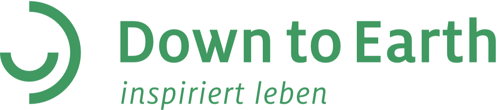
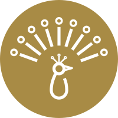
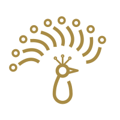

Down to Earth
- Branche
- Coaching, Seminare, Verlag
- Leistungen
- Branding, Visual Design, UI/UX Design, neue Icons, Umsetzung in Kadence, jeden Monat neue Aufgaben
- Zeitraum
- seit 2023 · Retainer


Drei Tage, neun Lebenselemente, ein Online-Kongress: Die Seite zu Swing Leben ’27 zeigt Kerstin Hacks Swing-Konzept auf einen Blick.
Leistungen
- Gestaltung der ganzen Seite
- Programmkarten für die drei Tage
- Sprecher-Sektion mit Filter nach Tagen
- Zeitplan „Wann spricht wer“
- Swing-Pfau und Icons der Lebenselemente
- Umsetzung in Kadence
Ausgangslage
Herausforderung
Ein Online-Kongress mit vielen Sprecherinnen und Sprechern an drei Tagen braucht eine Seite, auf der man schnell sieht, was wann passiert.
Lösung
Klare Bausteine im Swing-Design: Programmkarten je Tag, Sprecher nach Tagen, ein Zeitplan auf einen Blick.
Ziele
- Das Programm der drei Tage auf einen Blick zeigen.
- Sprecherinnen und Sprecher nach Tagen und Themen finden lassen.
- Die Seite einheitlich im Swing-Design halten.
Gestaltung
Swing-Pfau und Lebenselemente
Der Swing-Pfau ist das Zeichen des Swing-Konzepts. Dazu gehören neun Lebenselemente, jedes mit eigenem Icon und eigener Farbe aus dem Swing-Rad.


Neun Icons, neun Farben

Farben und Schrift
- Digital HEX
- #3F9961
- RGB
- 63 153 97
- Einsatz
- Buttons, Dachzeilen
- Digital HEX
- #2D3B42
- RGB
- 45 59 66
- Einsatz
- Überschriften
- Digital HEX
- #F3BF00
- RGB
- 243 191 0
- Einsatz
- Tag 1
- Digital HEX
- #DD7245
- RGB
- 221 114 69
- Einsatz
- Tag 2
- Digital HEX
- #7F95CC
- RGB
- 127 149 204
- Einsatz
- Tag 3
- Digital HEX
- #F7F5F1
- RGB
- 247 245 241
- Einsatz
- Flächen
Aa
Raleway und Inter
Raleway für Überschriften, Inter für Fließtext, Dachzeilen und Buttons.
- Titel
Inter · 72 / 92 · 400Swing Leben ´27 - H2
40 / 46 · 700Drei intensive Tage - H3
23 / 27 · 700Klarheit über das Wichtige - Dachzeile
Inter · 14 / 28 · 600Das Programm - Fließtext
Inter · 18 / 28 · 400Jeder Tag widmet sich drei Lebensbereichen des Swing-Konzepts. - Button
Inter · 16 · 400Jetzt Platz sichern
Die Seite Leben ’27
Eine Seite, ein Weg: was man gewinnt, das Programm der drei Tage, wer wann spricht, das Swing-Konzept und die Teilnahme. Am Rechner und am Handy.


Ergebnis
Das Programm auf einen Blick
Drei farbige Karten zeigen jeden Tag mit Thema, Datum und seinen drei Lebenselementen.
Sprecher finden
Ein Filter zeigt die Sprecher je Tag; der Zeitplan ordnet jedem Lebenselement seine Gäste zu.
Einheitlich im Swing-Design
Die Themen-Chips tragen die Farben des Swing-Rads und sind gut lesbar (Kontrast ab 4,6 : 1).
Gestaltung der ganzen Seite, Icons und Umsetzung in Kadence: Anna Härtelt
Sie wünschen sich jemanden, der Ihre Website laufend betreut?
Projekt anfragen